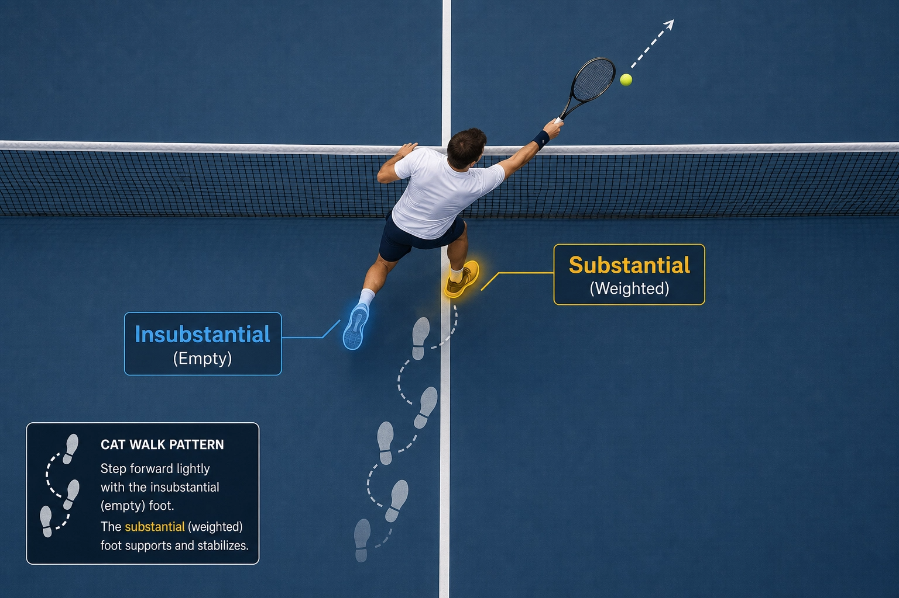
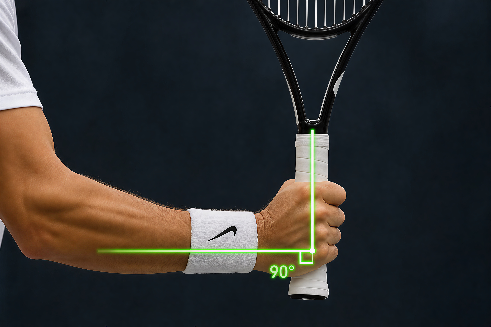

Visual Coaching Library
Less is More — Catch, Don't Swing
6 cards · master-coach-direct
Volley là cú đánhеть ngay phía trước mạng, nơi mà technique và reflex quyết định. Các thẻ trong bộ này cung cấp nền tảng cơ bản: less-is-more blueprint, Jamie Murray drills, và nguyên tắc kiểm soát bàn tay.
Hai thẻ bổ sung từ Volley V2 tập trung vào việc sửa lỗi thường gặp và các kiểu xoắn (coil) để tối ưu hóa hiệu suất và nhất quán.
June 2026 — bilingual EN + VI
Source: MD notes + Gemini-generated images
Index of Cards
- Volley · less-is-more blueprint
- Volley · Jamie Murray drills
- Volley · tension integrity
- Volley · palm control
- 5 Common Volley Mistakes & Fixes (gemini-vi sample, 2026-06-29) — marginal, see caveats
- Coil Styles: Side-Bend vs Straight-Body for Forehand Stance Choice (gemini-vi sample, 2026-06-29) — marginal, see caveats

EN: Master the Volley — The 'Less is More' Blueprint
VI: Làm chủ Volley — Bản thiết kế 'Ít là Nhiều'
NotebookLM infographic with 4 sections: Mechanical Setup, Hitting Logic (catch, don't swing), Elite Comparison, Foot Stance.
CUE (EN)
"Volley is not a swing — it is a catch and redirect. Racket face perpendicular, body forward, catch then push. No backswing, no chop."
CUE (VI)
"Volley không phải cú vung — nó là đỡ rồi đẩy. Mặt vợt vuông góc, người tiến, đỡ xong đẩy. Không vung, không chặt."
What the diagram is saying
- Title: 'Master the Volley: The "Less is More" Blueprint'. Subtitle: 'Essential Mechanical & Mental Shifts for Professional Control & Simplicity'.
- Central figure: player at net mid-volley, racket forward meeting ball, 'impact sparks' visual effect.
- Section 1 — Mechanical Setup: Continental grip + Open-U arm (45° forearm-racket angle).
- Section 2 — Hitting Logic: 'Catch the ball, don't swing' with baseball glove icon. High-to-low path for control backspin.
- Section 3 — Elite Comparison: Flat/Reflex vs Slice/Israeli with WHY/HOW sub-grids.
- Section 4 — Foot Stance: Sprinter ready stance + 'After-Step' timing (impact first, then step).
- Centre quote: 'Elite volleying is defined by simplicity & stability, redirecting opponent's power with precision.'
Practical Instructions (Hướng Dẫn Thực Hành)
1. Stand at the net in sprinter-ready stance: feet staggered, weight on the balls, knees soft, racket forward in front of the chest.
1. Đứng lưới ở tư thế sprinter-ready: chân so le, trọng lượng trên mũi, gối mềm, vợt phía trước ngực.
2. Use Continental grip — index knuckle on bevel 2. Open-U arm: 45° between forearm and racket, no big backswing.
2. Dùng grip Continental — đốt ngón trỏ trên bevel 2. Cánh tay Open-U: 45° giữa cẳng tay và vợt, không vung sau.
3. Catch the ball with the racket face, don't swing at it — the ball comes to you, you just redirect.
3. Bắt bóng bằng mặt vợt, đừng vung — bóng tới, mình chỉ chuyển hướng.
4. Impact first, then step — meet the ball out in front, then push forward to compress the opponent or close the angle.
4. Tiếp xúc trước, bước sau — gặp bóng phía trước, rồi đẩy tới để nén đối thủ.
5. Keep the body still after contact, do not chop down — wrist moves forward, not down, to avoid pop-up balls.
5. Giữ thân yên sau tiếp xúc, đừng chặt xuống — cổ tay đi tới, không đi xuống, để tránh pop-up.

EN: Tennis Footwork: Volley Drills (Jamie Murray)
VI: Bài tập chân Volley (Jamie Murray)
Two drill patterns: Far Ball (step-step-step, 3-step progression) vs Close Ball (cross-over, BHV/FHV variants).
CUE (EN)
"Far balls → step-step-step (3 bước rõ ràng). Close balls → cross-over (1 chân qua chân kia). Always impact FIRST, then step."
CUE (VI)
"Bóng xa → step-step-step (3 bước rõ). Bóng gần → cross-over (1 chân qua chân kia). Luôn tiếp xúc TRƯỚC, bước SAU."
What the diagram is saying
- Drill 1 — Far Ball / Move by Steps: 3-step progression (Start → Approach → Finish). Stick figure with callout: Outside leg → Inside leg → Outside leg.
- Drill 2 — Cross-over Steps for Close Ball: BHV (Backhand Volley) cross-over — left foot cross-over then RF pull-around-inside. FHV (Forehand Volley) cross-over — right foot cross-over then LF cross-over.
- Both drills end with a 'Return arrow': push off, recover to ready position.
Practical Instructions (Hướng Dẫn Thực Hành)
1. For far balls: step-step-step — outside leg first, then inside leg, then outside leg again, in 3 distinct steps.
1. Bóng xa: step-step-step — chân ngoài trước, chân trong, chân ngoài, 3 bước rõ ràng.
2. For close balls: cross-over step — one foot crosses over the other, then pulls around, for fast recovery.
2. Bóng gần: cross-over — chân này bước qua chân kia, kéo quanh, phục hồi nhanh.
3. Always impact the ball first, then step — the step is for recovery, not preparation.
3. Luôn tiếp xúc bóng trước, rồi bước — bước để phục hồi, không phải chuẩn bị.
4. End every drill with a return arrow: push off, recover to the middle, ready position.
4. Mỗi bài tập kết thúc bằng mũi tên return: đẩy ra, về giữa, sẵn sàng.
5. Practice both patterns with a partner feeding balls from the baseline, calling 'FHV' or 'BHV' before each shot.
5. Tập cả hai mẫu với bạn feed từ baseline, gọi 'FHV' hoặc 'BHV' trước mỗi cú.

EN: Tension & Integrity — Mechanics of a Tennis Volley
VI: Căng & Nguyên vẹn — Cơ học của cú Volley
Torsion + elastic energy storage. The unified-arm concept: 1 piece = 1 unit = 1 whip. Pre-load, then swing.
CUE (EN)
"Tension and integrity: store elastic energy by being pre-loaded. Then release. The arm is one whip, not two hands."
CUE (VI)
"Căng và nguyên vẹn: tích trữ năng lượng đàn hồi bằng cách nạp trước. Rồi thả. Tay là một roi, không phải hai tay rời rạc."
What the diagram is saying
- Title: 'TENSION & INTEGRITY: MECHANICS OF A TENNIS VOLLEY'.
- Top-right note: 'Apply to all strokes (esp. volley) = 1 piece'.
- Central illustration: vertical grey rod/axis with multi-coloured coiled spring wrapping around — coils show torsional deformation. Text 'STORE ELASTIC ENERGY' below.
- Pathway of Energy caption: 'From left hand to right hand → 1 piece = 1 Unit = 1 Whip'.
- Two example boxes: EXAMPLE A (Pre-loaded) 'Feel stretched when pre-loaded'; EXAMPLE B (Swinging) 'Feel relax when swing'.
Practical Instructions (Hướng Dẫn Thực Hành)
1. Pre-load the body: feel stretched when coiled — tension is stored, not avoided.
1. Pre-load cơ thể: cảm thấy kéo căng khi xoắn — lực được tích trữ, không tránh né.
2. Lower body is stable — 2 legs have tension, front leg as a bridge, back leg drives forward.
2. Thân dưới ổn định — 2 chân có lực, chân trước làm cầu, chân sau đẩy tới.
3. From left hand to right hand, treat the arm as 1 piece = 1 unit = 1 whip.
3. Từ tay trái sang tay phải, coi cánh tay là 1 mảnh = 1 đơn vị = 1 roi da.
4. At contact: feel relax when swinging — release the stored energy through the unified arm.
4. Ở tiếp xúc: cảm thấy thư giãn khi vung — giải phóng năng lượng qua cánh tay hợp nhất.
5. After contact: store elastic energy by being pre-loaded again — ready for the next ball.
5. Sau tiếp xúc: tích trữ đàn hồi bằng pre-load lại — sẵn sàng cho bóng tiếp theo.

EN: Palm Up
Palm Up / Palm Down racket face control + kinematic chain + volley
CUE (EN)
1. Palm up at contact = open face, lift or topspin
2. Palm down at contact = closed face, slice or drive
3. Face angle change = direction change, not just spin
4. Adjust face in takeback, not at contact
5. Volley = palm up (open) for control, palm down (closed) for punch
6. Face control flows from forearm rotation
7. Whip starts at the elbow, not the racket face
CUE (VI)
1. Lòng bàn tay ngửa tại tiếp xúc = mặt mở, nâng hoặc topspin
2. Lòng bàn tay úp tại tiếp xúc = mặt đóng, slice hoặc drive
3. Thay đổi góc mặt = thay đổi hướng
4. Điều chỉnh mặt trong takeback
5. Volley = lòng ngửa (mở) kiểm soát, lòng úp (đóng) đấm
6. Kiểm soát mặt vợt từ xoay cẳng tay
7. Roi bắt đầu từ khuỷu tay
What the diagram is saying
- Diagrammatic illustration: Palm Up / Palm Down racket face control + kinematic chain + volley
Practical Instructions (Hướng Dẫn Thực Hành)
1. Forehand volley: palm up at contact — the palm knows where the ball goes.
1. Forehand volley: lòng bàn tay lên ở tiếp xúc — lòng bàn tay biết bóng đi đâu.
2. Racket face = palm face: open face = lift the ball, closed face = drive the ball down.
2. Mặt vợt = mặt lòng bàn tay: mở = nâng bóng, đóng = đập bóng xuống.
3. Vertical palm = neutral position — default starting point for any volley.
3. Lòng bàn tay dọc = vị trí trung tính — điểm bắt đầu mặc định cho mọi volley.
4. Paddle analogy: imagine a paddle, tilt the palm to tilt the ball trajectory.
4. Phép so sánh mái chèo: tưởng tượng mái chèo, nghiêng lòng bàn tay để nghiêng quỹ đạo bóng.
5. Backhand volley: palm down at contact — same logic, opposite face angle.
5. Backhand volley: lòng bàn tay xuống ở tiếp xúc — cùng logic, góc mặt vợt ngược lại.

EN: 5 Common Volley Mistakes & Fixes
VI: 5 Lỗi Volley Thường Gặp & Cách Khắc Phục
Red/green comparison chart (Lỗi vs Khắc phục) with 5 numbered mistake/fix pairs. Forehand & Backhand volley 3-step sequences at bottom right.
CUE (EN)
"Volley is attack. Be proactive. Step forward, not back. Open racket early, contact in front, sudden stop. Không ngả sau, không lắc cổ tay."
CUE (VI)
"Volley là tấn công. Bước chân lên trước, không chờ bóng. Mở vợt sớm (2h thay vì 4h), tiếp xúc phía trước người, mặt vợt vuông góc 90°. Khóa cổ tay, dùng vai sau để tạo lực. Đừng ngả người ra sau — HLV gọi đây là 'lỗi volley #1 của 50+'."
What the diagram is saying
- Lỗi 1: 'Chờ bóng & mở vợt trễ' (4h position, red X) — Fix: 'Mở vợt ngay' (2h/10h, green shield). Wall drill suggested.
- Lỗi 2: 'Mở vợt quá dài' (4h/8h, ball too deep) — Fix: 'Mở vợt ngắn, tiếp xúc phía trước'. Use wall as backstop.
- Lỗi 3: 'Thụ động' (flat-footed) — Fix: 'Chủ động bước chân lên trước, chùng gối, dồn trọng tâm'.
- Lỗi 4: 'Tập trung một bên' (racket only on weak side) — Fix: 'Luôn thủ vợt giữa người, đầu vợt ngang tầm mắt'.
- Lỗi 5: 'Lắc & gỡ cổ tay' — Fix: 'Khóa cổ tay & dùng vai sau'. Anatomy callout.
- Bottom-right: 3-step sequences for FH and BH volley — ① Mở vợt trước (2h/10h) → ② Tiếp xúc 90° → ③ Điểm dừng đột ngột.
Practical Instructions (Hướng Dẫn Thực Hành)
1. Mistake 1: Opening the racket too late. Fix: open the racket as soon as you see the ball's direction.
1. Lỗi 1: Mở vợt quá trễ. Sửa: mở vợt ngay khi vừa thấy hướng bóng.
2. Mistake 2: Backswing too long. Fix: short backswing, contact in front, push out.
2. Lỗi 2: Backswing quá dài. Sửa: backswing ngắn, tiếp xúc phía trước, đẩy ra.
3. Mistake 3: Passive net play. Fix: be the aggressor, move forward, take the ball early.
3. Lỗi 3: Passive ở lưới. Sửa: là người chủ động, bước tới, đánh sớm.
4. Mistake 4: Wrong grip. Fix: Continental for volley, no exceptions, switch quickly if needed.
4. Lỗi 4: Grip sai. Sửa: Continental cho volley, không ngoại lệ, đổi nhanh nếu cần.
5. Mistake 5: Flicking the wrist. Fix: hold the racket firm, push the ball with the body, not the wrist.
5. Lỗi 5: Flick cổ tay. Sửa: cầm vợt chắc, đẩy bóng bằng thân, không bằng cổ tay.
EN: Coil Styles: Side-Bend vs Straight-Body for Forehand Stance Choice
VI: Hai Kiểu Cuộn Người (Coil): Side-Bend Mở vs Straight-Body Closed
Two-column comparison: left = 'With side bend' (open stance, X-Factor, Out Reach, oblique stretch). Right = 'Without side bend' (closed stance, linear lunge, front reach, body straight). Stick figures front-view with arrows.
CUE (EN)
"Don't coil the same way every time. Open stance, rushed → side-bend + X-Factor (rotational whip). Closed stance, time to step in → straight body + linear lunge (clean weight transfer). Choose by situation, not habit."
CUE (VI)
"Không phải lúc nào cũng cuộn người giống nhau. Open stance, vội, bóng bên hông → side-bend + X-Factor (xoay nhiều). Closed stance, có thời gian bước vào → straight body + linear lunge (truyền trọng lượng sạch). Chọn theo tình huống, không theo thói quen."
What the diagram is saying
- Left column 'With side bend' (open stance, rotational coil): Body tilts 30° laterally, hips/shoulders separate (X-Factor = 45°), arm reaches 'Out' (wide path), uses obliques + lats + spinal fascia for elastic energy. Best for: open stance, rushed shots, on-the-run balls.
- Right column 'Without side bend' (closed stance, linear drive): Spine stays vertical, body straight, front leg lunge, arm reaches 'Forward' (chest-level contact). Power = mass × velocity (weight transfer). Best for: closed stance, time to step in, classic drives.
- Trade-off left: more torque, lateral balance, needs core control. Risk: low-back stress if over-tilted without hip separation.
- Trade-off right: simpler, stable for older knees, easier timing. Risk: less racquet-head speed if caught late.
- Top-right 'VS' inset: elderly man with walker (rigid) vs young player (spring) — the metaphor: side-bend = spring; straight-body = brick wall.
Practical Instructions (Hướng Dẫn Thực Hành)
1. Linear drive = no side bend — straight body, less power, more control.
1. Linear drive = không nghiêng bên — thân thẳng, ít lực, nhiều kiểm soát.
2. Open stance + side bend = emergency power — use for wide balls, defensive gets.
2. Open stance + nghiêng bên = lực khẩn cấp — dùng cho bóng rộng, defensive get.
3. Side bend at the trunk, not the waist — keep the hips level, bend from the rib cage.
3. Nghiêng bên ở thân, không ở eo — giữ hông ngang, nghiêng từ khung sườn.
4. With side bend you have power. Without side bend you have a push.
4. Có nghiêng bên thì có lực. Không nghiêng bên thì chỉ là đẩy.
5. Match coil style to the situation: side bend for power, straight for control.
5. Khớp kiểu xoắn với tình huống: nghiêng bên cho lực, thẳng cho kiểm soát.
3 takeaway cuối
- (1) Volley = catch, không phải swing. Mặt vợt vuông góc, người tiến, đỡ xong đẩy — không vung, không chặt.
- (2) Impact trước, step sau. Bóng xa → step-step-step (3 bước); bóng gần → cross-over. Luôn impact trước, bước sau.
- (3) Căng trong, lỏng ngoài. Tay là một roi (1 piece = 1 whip). Pre-load = stretch; swing = relax. Torsion tích năng lượng, swing giải phóng.
Drills tham khảo (20-min practice)
- 5 phút Wall volley no-backswing: đứng cách tường 3m, volley nhẹ; target 20 FH + 20 BH liên tục, chỉ mặt vợt vuông góc.
- 5 phút Bridge-leg drill: chân trước (trái cho FH volley) đặt trên vạch, chân sau đẩy nhẹ tới, vợt chỉ 'đấm' 15cm về trước.
- 5 phút Partner poach game: partner ném nhẹ vào ngực khi bạn gót chân → lặp lại khi mũi chân đổ trước → sẽ thấy né dễ hơn.
- 5 phút Cross-step close-volley: tự ném bóng tới sát người, xuyệt qua bên kia lưới → thực hành cross-over steps.
Special note
Sửa 1 lỗi volley #1 của 50+: không ngả sau. HLV gọi đây là 'lỗi volley #1' vì hông khóa, không chuyển được lực từ chân sau; mặt vợt mở lên trời → bóng bay ra ngoài; đặt lên gót chân, khó né bóng. Sửa bằng cách giữ bước ngắn, gối gập, thân trên chỉ hơi đổ trước từ hông — không phải gập lưng.
End of VOLLEY
Henry Pham · Visual Coaching Library · Pilot Series · June 2026